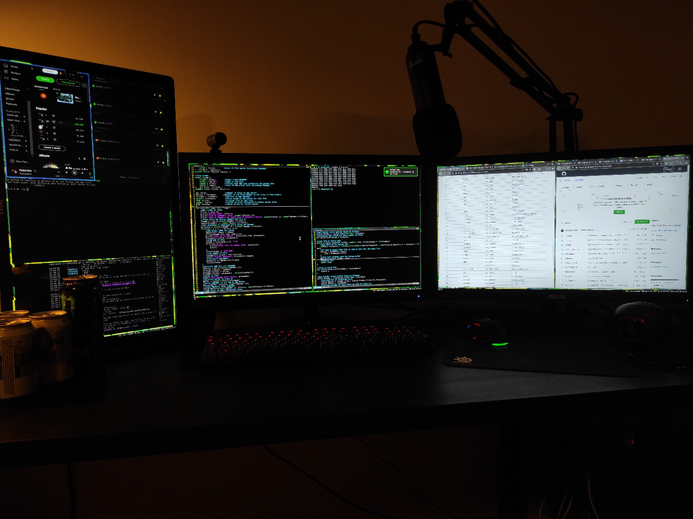

Battlestations
This page serves as a collection of various "battlestations" from battlestation threads on 4chan.org, lainchan.org, 2ch.net, and more.
CRTs


Colorful


Clean

Odd

Chinese doctor's hospital setup.
This page serves as a collection of various "battlestations" from battlestation threads on 4chan.org, lainchan.org, 2ch.net, and more.
Chinese doctor's hospital setup.